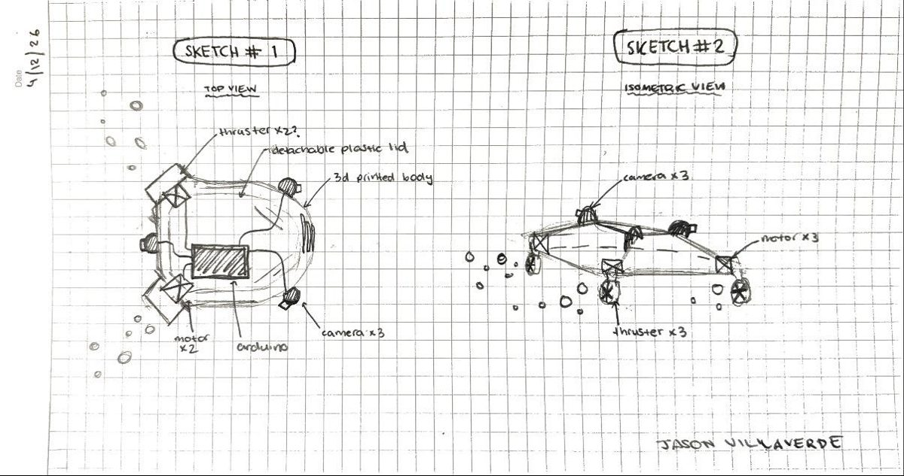
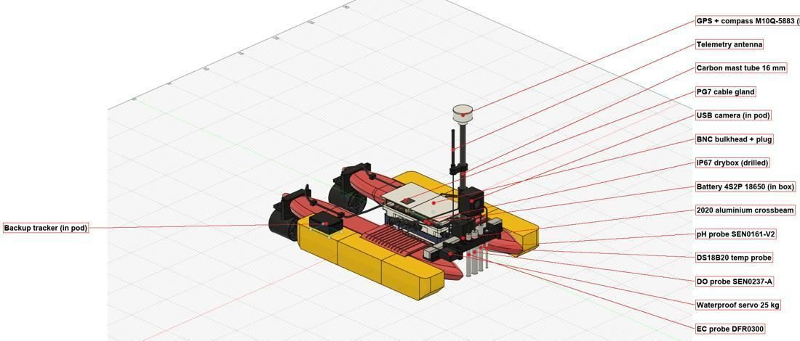
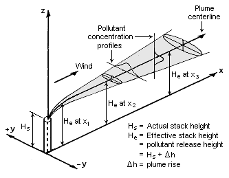
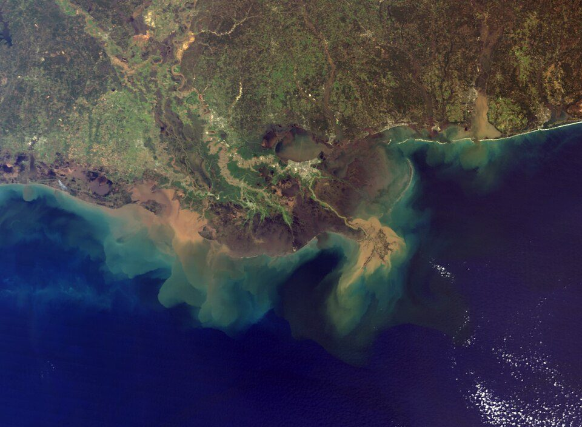
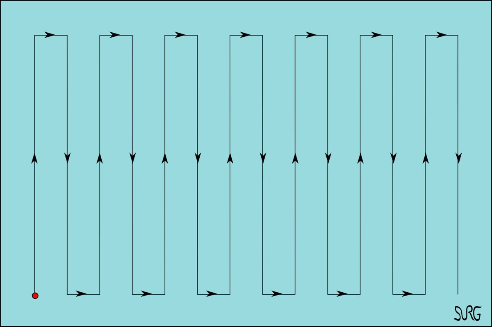
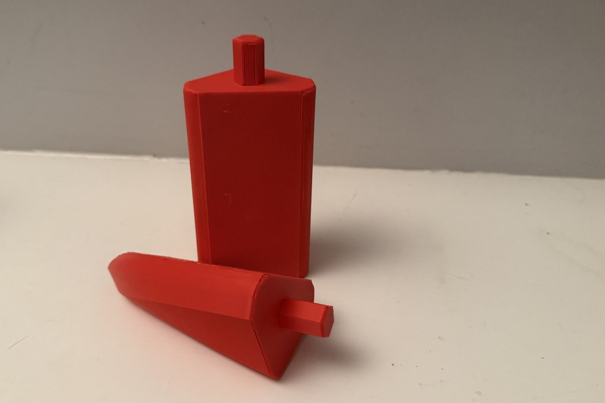
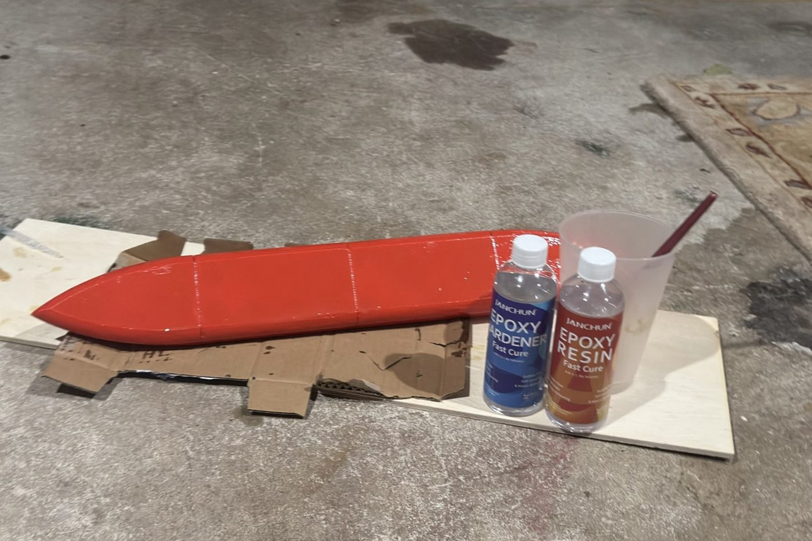
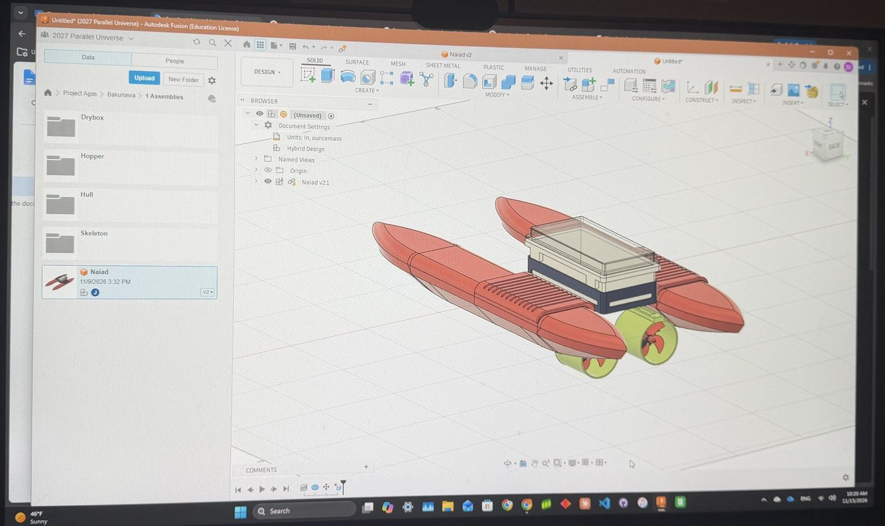
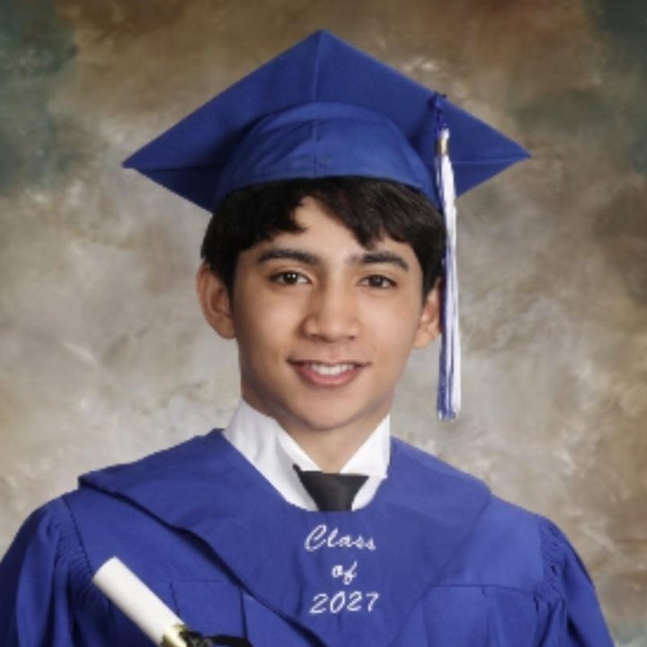
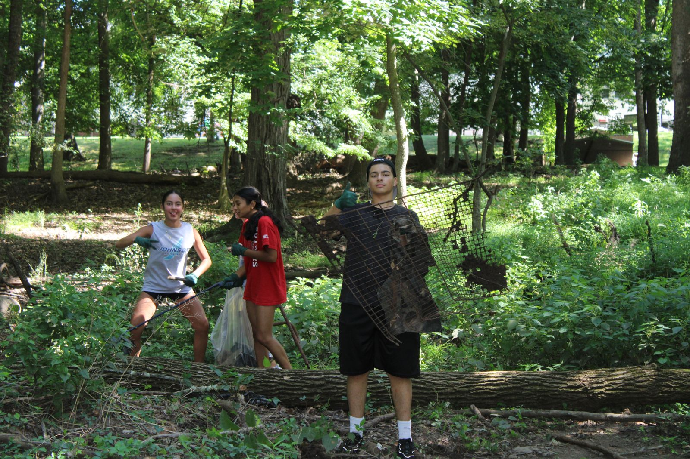

A small catamaran that drives itself upstream toward dirtier water until it finds the pipe or ditch the pollution is coming from, then logs the spot with GPS, photos and sensor readings.
This is the plan behind NAIAD that I wrote for the fair. The goal is to find where pollution gets into a river and hand that exact spot to the people who can fix it.
Most river pollution comes in through the same pipes and outfalls over and over. Cleanups pull trash out downstream after it has already spread, and the source keeps going. Finding the exact source takes slow manual surveys, so it barely ever happens.
If a boat can trace the pollution back on its own and log the spot with GPS, photos and readings, the town or NJDEP gets the evidence they need to put in a trash trap or enforce discharge rules at that outfall.
Can a boat that follows the pollution upstream find its source faster and more often than one that sweeps back and forth?
The idea comes from salmon, which smell their way back to the stream they were born in (Dittman & Quinn, 1996). My hypothesis is that if NAIAD steers toward stronger readings the same way, it will find sources in less time and with a higher success rate than a fixed sweep.
Conductivity and turbidity go up while dissolved oxygen drops near an outfall (Brown et al., 2004).
A nitrate probe reads it directly. The algae it feeds also pulls oxygen down and swings the pH.
Oil floats, so the camera model catches sheens on the surface along with trash.
Shows up as sudden, local jumps in pH or conductivity.
NAIAD won't name specific chemicals. It flags water that looks off, follows it upstream and marks the spot so officials can take a sample for the lab.
Testing starts in a pool with a harmless salt or food dye plume released from a known spot, then moves to the Rahway River with an adult there. Every run records whether it found the source, how long it took and how well it picked out trash.


A pipe or runoff ditch leaks water that's different from the river, and the current spreads it into a plume that gets wider and weaker downstream. The boat's job is to find the strong, narrow end. I'm working this part out on Sirena, NAIAD's smaller sister boat, first.


Currents break plumes into patches, so the highest reading isn't always closest to the source. In one study the peak was about 70 cm off (Lilienthal et al., 2006).
The main signal is conductivity. Sewage and road salt runoff push it up, and the probe reacts in about a second. pH and dissolved oxygen take up to a minute to settle, so those are for confirming once the boat stops near the source.
Drive a back and forth lawnmower path, log conductivity and GPS every second, find the strongest spot, then run a smaller grid around it two or three times. One stray patch can't fool it.
Copies how moths follow a scent. Reading goes up, drive upstream. Lose it, zigzag side to side until you pick it up again. It's faster, but patches throw it off more.

For now it's all rules with no AI. The Pi reads the probes and sends waypoints to ArduPilot, whose PID loops do the steering. If the Pi goes quiet for 3 seconds the boat stops, which doubles as a failsafe.
Readings go on a live web map built with Leaflet and OpenStreetMap. The river gets split into short segments, and each one is colored green, yellow or red from a combined pollution score, with thresholds from New Jersey's surface water quality standards. Trash and sheens show up as pins with photos, and the traced source gets its own marker, so anyone can see where the river is healthy and where the problem starts.
How NAIAD got from a concept sheet to a full CAD model, one work session at a time. Newest is at the bottom.
Drafted the concept under Project Agos: what the boat does, the hardware and software, funding ideas and a name. NAIAD won. The open questions were LoRa or Wi-Fi, and a printed hull or an off the shelf pontoon.
Researched a Union County waterway boat for collecting data, had a CAD day in Fusion and printed a hull prototype in segments small enough for the 180 mm bed on my A1 mini. Then I ordered epoxy to waterproof it.

Brushed a coat of fast cure epoxy over the printed hull to seal the layer lines and the seams between segments, then left it in the garage to cure.

Got the basic layout designed in Fusion: two hulls, the skeleton between them, a clear lid drybox on the deck and two thrusters at the back.

My TSA advisor checked with the North Jersey STEM Fair about registration, and I started the research plan.
Split the model into an assembly plus five subsystem files (hull, structure, propulsion, electronics, sensors) and ran a CAD check. It found two broken features and a bunch of wires floating in the air inside the drybox. Fixed the features, then rerouted every wire along the walls, tray and deck with tie mounts.
The check now comes back clean. The boat comes out around 5.2 kg with 25.3 mm of freeboard, and every printed part fits the printer.
Gave the hulls a sharper, more hydro shape, exported web models of every subsystem and built this site around them.
Ordering the electronics and sensors off the parts list and still adjusting the CAD as parts get locked in. Once everything shows up, I wire it into the drybox and take NAIAD to the pool for its first salt plume test.

I'm a senior in New Jersey who likes building things that go in the water. When I was little I wanted to be a marine biologist, and these days I want to study mechanical engineering and robotics and end up working on autonomous underwater vehicles.
I'm the CAD manager on FRC Team 1257, where I design our competition robot, and I'm president of my school's TSA chapter. I've interned at DECTRIS USA and New Jersey Precision Technologies, and when I'm not in CAD I'm probably in the pool swimming the 200 and 500 free.

Project Agos is a youth environmental nonprofit I cofounded in Union County, NJ. We run waterway cleanups with the Union County Department of Parks and Recreation, five so far, whenever the weather and water let us.
Before every cleanup someone has to walk the river to figure out where the trash is piling up and where it's coming from, and that scouting eats a lot of time. I built NAIAD to do that part for us. It drives the river, finds the hotspots and the source, and we show up already knowing where to work.